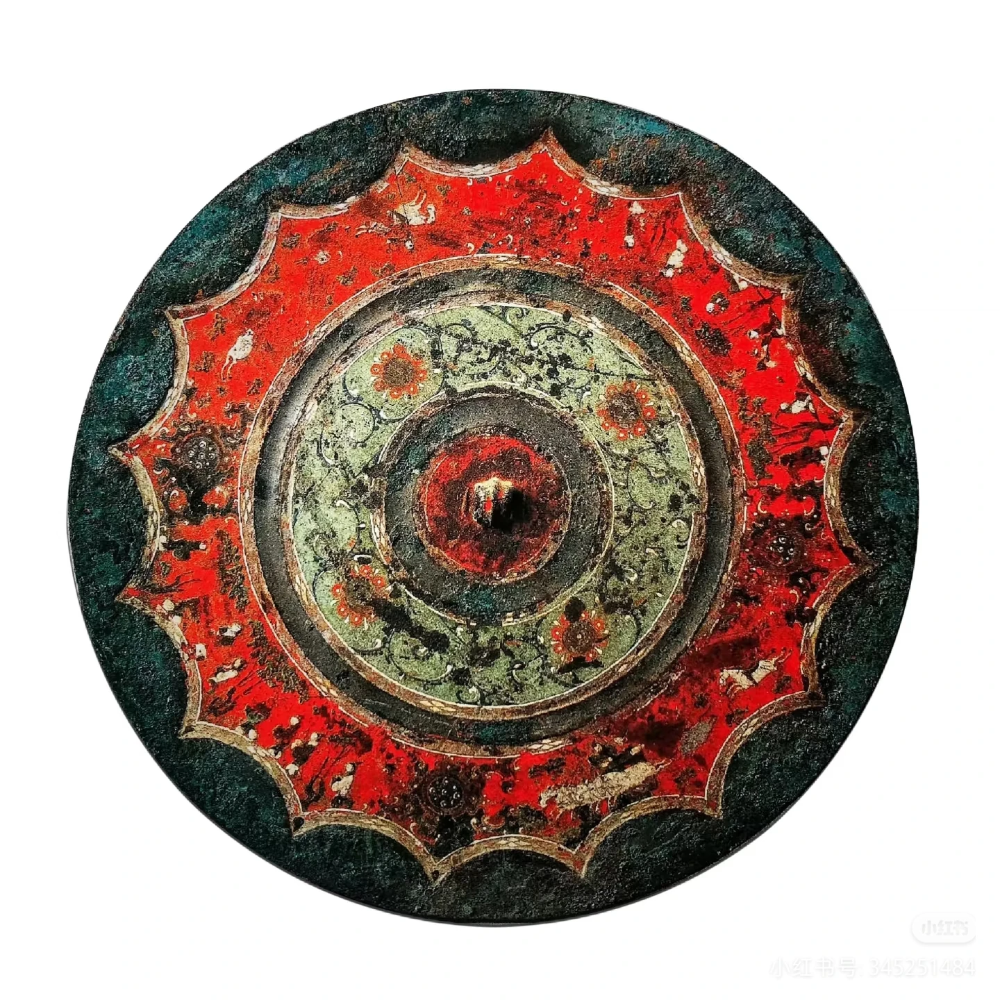

基本信息
西安博物院位于友谊西路荐福寺院内，由博物馆、小雁塔和荐福寺历史文化景区组成。馆内陈列以西安地区历代出土文物为主体，室外保存唐代小雁塔及相关寺院遗址。
由一面汉镜进入西安的器物、墓葬与城市遗存
开场艺术背景由 AI 生成 · 不作为文物图像
ABOUT THE MUSEUM
XI’AN MUSEUM
西安博物院位于友谊西路荐福寺院内，由博物馆、小雁塔和荐福寺历史文化景区组成。馆内陈列以西安地区历代出土文物为主体，室外保存唐代小雁塔及相关寺院遗址。
博物院于2007年正式对外开放。建馆工程同时涉及小雁塔周边环境整治、荐福寺遗址保护和新馆陈列，使馆舍建设与历史建筑保护在同一区域展开。
馆藏包括青铜器、玉器、陶瓷、金银器、佛教造像、墓葬石刻、书画与古籍。汉唐墓葬器物和西安地区出土材料，是理解古代长安城市生活与手工业的重要实物。
小雁塔始建于唐景龙年间，是荐福寺塔院的核心建筑。参观路线由室内藏品延伸至塔院与寺址，器物的出土地、城市空间和保存环境由此获得具体位置。

第三批禁止出境展览文物NATIONAL TREASURE · 01
朱砂、石青与石绿仍覆盖在铜镜背面。出行、会见、狩猎和宴饮被安排在最外层环带中，十七个人物与车马、树木、禽兽共同组成一幅直径二十八厘米的叙事画面。
FOUR ROUTES
从器物进入城市史
不必先通读六十六条档案。四条短径分别从铭文、日用器、造像和釉色出发，把器物放回礼制、居室、寺院与城市交通之中。
OBJECT INDEX
按时代、门类与专题浏览西安博物院藏品；点击卡片可查看器形、工艺、出土信息和历史背景。
可换一个关键词，或清除当前分类与专题筛选。